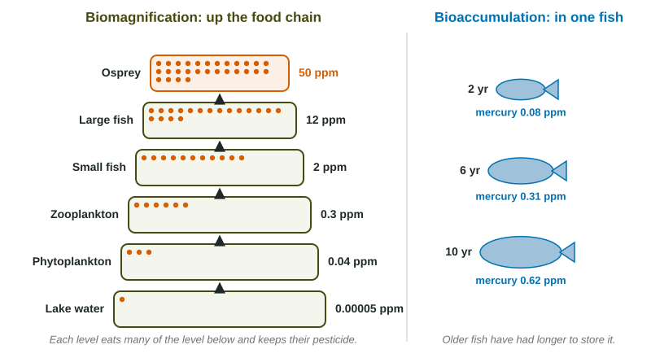

Some pollutants are harmless at the concentration you find in the water, yet deadly at the top of the food chain. Two processes explain how they get concentrated: one happens inside a single organism, the other happens between trophic levels.
Bioaccumulation: inside one organism
Bioaccumulation is the build-up of a substance in one organism over its life. If an organism takes in a substance faster than it can break it down or get rid of it, the amount in its body keeps rising. Older, larger fish of the same species therefore carry more mercury than younger ones. The substances that do this are persistent (they are not broken down) and fat-soluble (they are stored in fat instead of being excreted in urine).
Biomagnification: up the food chain

Biomagnification is the rise in concentration at each higher trophic level. A small fish eats thousands of zooplankton and keeps the pesticide from all of them. Most of the food's mass is used for energy and lost (recall the 10% rule), but the pesticide stays behind in fat. A large fish eats many small fish, and an osprey eats many large fish, so the concentration multiplies at each step.
| Bioaccumulation | Biomagnification | |
|---|---|---|
| Where | within one organism | across trophic levels |
| Over what | the organism's lifetime | the steps of a food chain |
| Evidence | older or larger individuals have higher levels | predators have higher levels than their prey |
Calculating it
Worked example: concentration three levels up. A pesticide is 0.02 ppm in zooplankton and increases tenfold at each step. What is it in a bird three levels higher?
Setup: . Answer: , a thousand times the zooplankton level.
Worked example: how many times greater? An osprey holds 50 ppm and the lake water 0.00005 ppm. Setup: . Answer: times, which is one million or .
Reading the data
A table of concentrations up a food chain shows biomagnification; a table of one species by age or size shows bioaccumulation. To compare levels, divide the higher concentration by the lower one to get "how many times" greater. Watch the decimal places with very small numbers: 0.00005 ppm is ppm, so a level of 50 ppm is a million times higher. Then explain the pattern: the substance is persistent and fat-soluble, so it is kept, not broken down or excreted.
The real cases
DDT biomagnified in fish-eating birds such as bald eagles, ospreys, peregrine falcons and brown pelicans. It interfered with calcium in eggshell formation, so eggs broke. After the United States banned DDT in 1972, these birds recovered. Methylmercury is the main concern today. Mercury released by burning coal, small-scale gold mining and other sources (worldwide, small-scale gold mining is the largest human source and coal burning the second, according to the UN Environment Programme) falls into lakes and oceans, where bacteria convert it to methylmercury. It reaches the highest levels in long-lived predatory fish such as swordfish, shark, king mackerel and large tuna. Because it harms the developing brain, pregnant people and children are advised to limit those fish and choose smaller ones such as sardines and salmon.